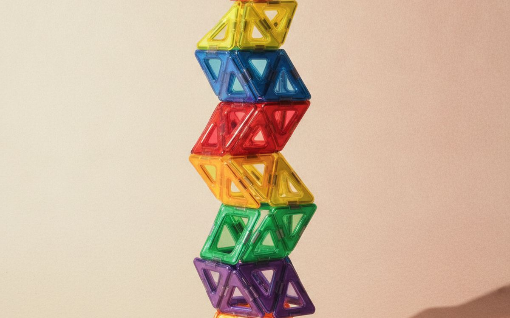
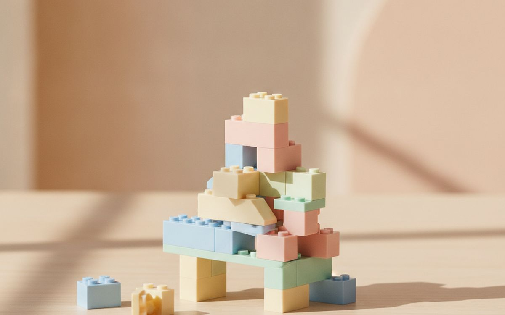
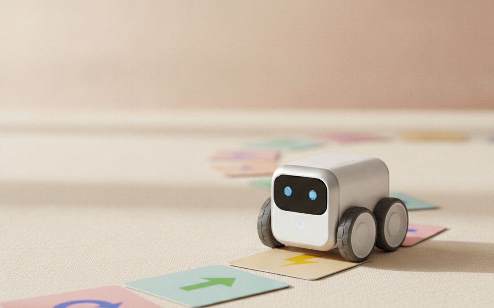
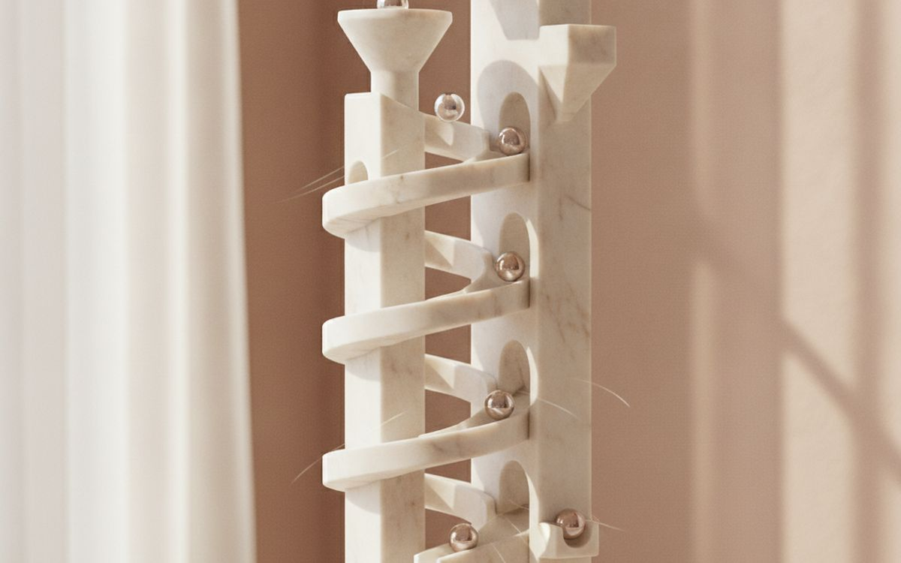
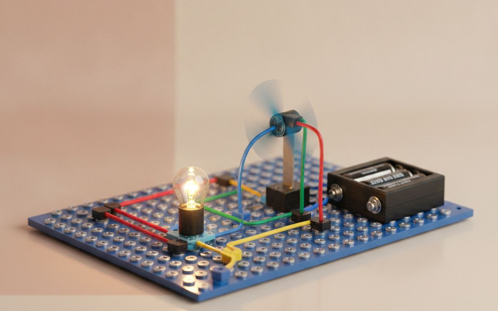
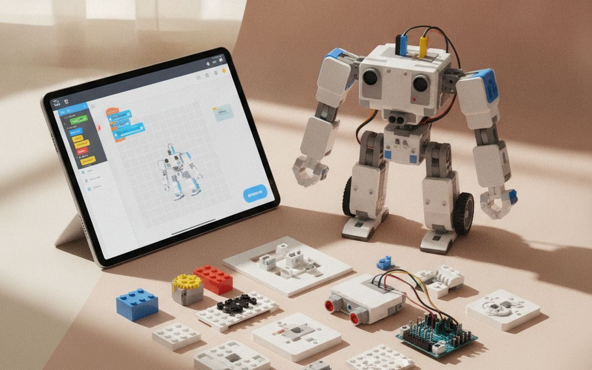
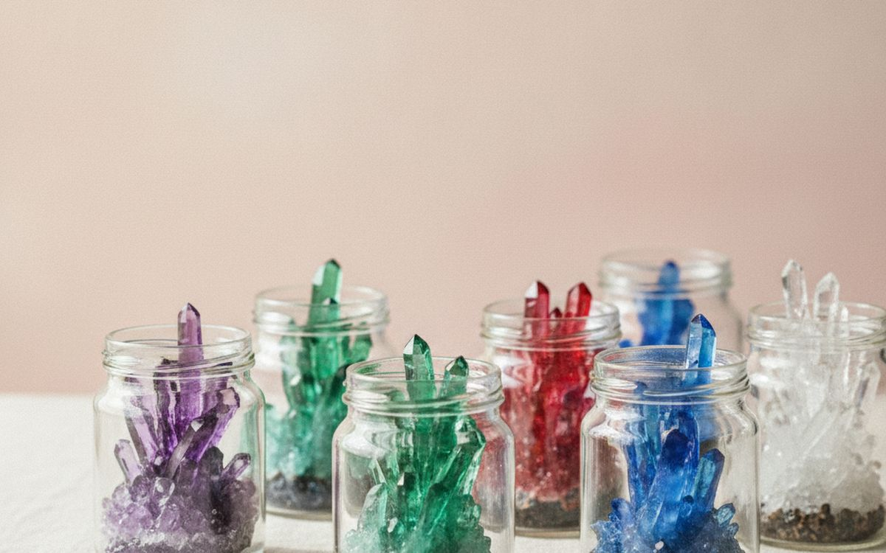
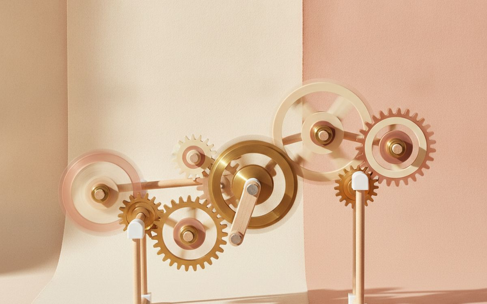
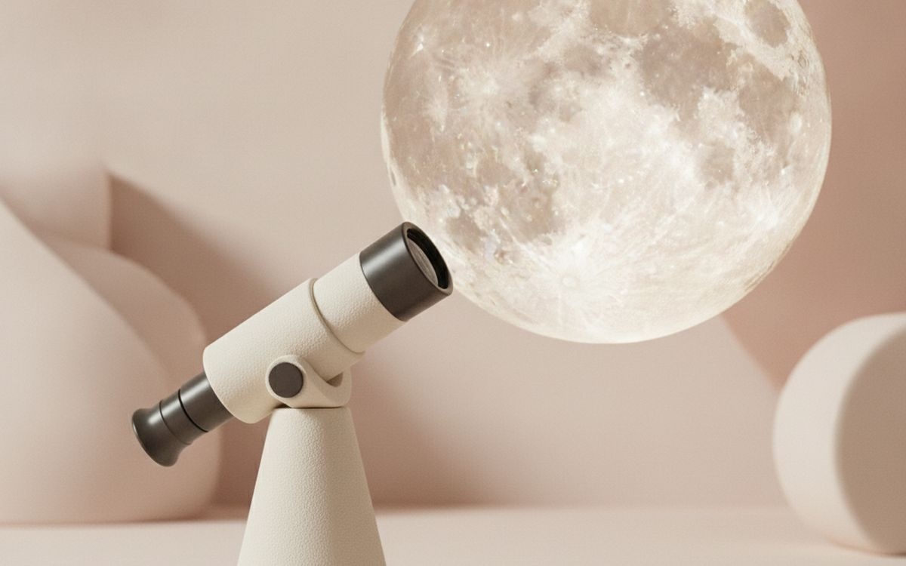

The STEM toy aisle is full of kits that promise to make children into engineers. Many are one-and-done: a single experiment, a model built once, then a box of parts in a cupboard. The toys that actually teach are the ones kids come back to over and over, because they allow endless building, experimenting and problem-solving.
This list is ordered by how long each toy stays in play. Open-ended building toys sit at the top because they last for years and grow with the child. Single-use kits are further down, and we say which ages each pick suits.
Prices below are approximate street prices at the time of writing and move around constantly, especially during sale events. Treat them as a rough band for budgeting, not a quote. Always check the live listing before you buy.
En resumen
A large set of magnetic building tiles
The toy that lasts for years
Aviso. Los enlaces de esta página son de afiliados. Si compras a través de uno podemos ganar una comisión sin coste adicional para ti. No influye en qué entra en esta lista ni en su orden.
Cómo lo elegimos
These picks come from educators, child development guidance, parent communities and long-run owner reports, cross-checked against current retail listings. We have not personally tested every item here. Check age ratings and safety certifications, especially for magnets and small parts; counterfeit toys may not meet safety standards.
De un vistazo
Los precios son aproximados en el momento de escribir y cambian a menudo.
Las recomendaciones

01 · The toy that lasts for yearsA large set of magnetic building tiles
Magnetic tiles like Magna-Tiles, Picasso Tiles and similar brands click together easily, so even young children can build towers, houses and ramps without frustration. Kids learn shapes, symmetry, balance and structures without noticing. They get played with from toddlerhood to around age ten, and siblings play together. Buy a big set; small ones run out too quickly. Choose brands with sealed magnets, because loose magnets are dangerous if swallowed. The case for it: years of open-ended play, easy for young kids, and teaches geometry and structure. The trade-off is real: cheap copies can crack and expose magnets and big sets need storage, so weigh that against how often it would actually get used.
$40-100Lo que aceptas: Cheap copies can crack and expose magnets
Por qué está aquí
- Years of open-ended play
- Easy for young kids
- Teaches geometry and structure
Conviene saber
- Cheap copies can crack and expose magnets
- Big sets need storage

02 · Engineering and creativity (ages 5+)A classic brick building set
Brick building sets teach following instructions, spatial reasoning and free building. A large set of mixed classic bricks is more open-ended than a single themed model. Themed kits are fun but often get built once and displayed. Buy a big box of basic bricks plus the occasional kit. The case for it: builds spatial skills, endless creativity, and grows with the child. The trade-off is real: small pieces everywhere and themed kits get built once, so weigh that against how often it would actually get used. For $30-80, it is a small, low-risk addition to the list rather than a centrepiece purchase you need to think hard about.
$30-80Lo que aceptas: Small pieces everywhere
Por qué está aquí
- Builds spatial skills
- Endless creativity
- Grows with the child
Conviene saber
- Small pieces everywhere
- Themed kits get built once

03 · Early coding (ages 4-8)A screen-free coding robot
Screen-free coding robots let young children program a sequence of moves with buttons or cards, then watch the robot follow it. It teaches sequencing, logic and debugging without a screen. Learning Resources' Code and Go Robot Mouse and similar toys are popular in classrooms. The case for it: teaches coding logic without screens, hands-on, and great for young kids. The trade-off is real: older kids outgrow it and needs batteries, so weigh that against how often it would actually get used. Priced around $40-80, it is easy to justify even if it only ends up getting occasional rather than daily use.
$40-80Lo que aceptas: Older kids outgrow it
Por qué está aquí
- Teaches coding logic without screens
- Hands-on
- Great for young kids
Conviene saber
- Older kids outgrow it
- Needs batteries

04 · Physics through play (ages 4-10)A marble run set
Marble runs teach gravity, momentum and trial and error. Kids build a track, test it, and redesign when the marble flies off. Sturdy sets with many pieces keep kids busy for hours and can be rebuilt differently every time. Marbles are a choking hazard for young children. The case for it: teaches physics, endless rebuilding, and satisfying to watch. The trade-off is real: marbles are a choking hazard for under 3s and cheap sets fall apart, so weigh that against how often it would actually get used. At $30-60, it earns its place on this list without asking for a big up-front commitment either way.
$30-60Lo que aceptas: Marbles are a choking hazard for under 3s
Por qué está aquí
- Teaches physics
- Endless rebuilding
- Satisfying to watch
Conviene saber
- Marbles are a choking hazard for under 3s
- Cheap sets fall apart

05 · Electronics basics (ages 8+)A snap circuits electronics kit
Snap-together circuit kits let kids build working circuits with lights, fans, buzzers and radios, following a guide or experimenting. No soldering is needed. They teach real electronics safely and offer many projects in one box. The case for it: real electronics safely, many projects, and no soldering. The trade-off is real: small pieces to keep track of and needs batteries, so weigh that against how often it would actually get used. For $30-60, it is a small, low-risk addition to the list rather than a centrepiece purchase you need to think hard about.
$30-60Lo que aceptas: Small pieces to keep track of
Por qué está aquí
- Real electronics safely
- Many projects
- No soldering
Conviene saber
- Small pieces to keep track of
- Needs batteries
06 · Curious scientists (ages 8+)A kids' microscope
A real microscope opens up a hidden world: pond water, leaves, salt crystals and hair. Look for a real glass lens and LED lighting rather than toy plastic optics. Digital microscopes that connect to a tablet are easier for younger kids to share. The case for it: endless things to look at, real science, and lasts for years. The trade-off is real: toy-grade optics disappoint and slides and samples need preparing, so weigh that against how often it would actually get used. Priced around $40-100, it is easy to justify even if it only ends up getting occasional rather than daily use.
$40-100Lo que aceptas: Toy-grade optics disappoint
Por qué está aquí
- Endless things to look at
- Real science
- Lasts for years
Conviene saber
- Toy-grade optics disappoint
- Slides and samples need preparing

07 · Older kids who code (ages 10+)A programmable robot kit
For older kids, a buildable robot kit programmed through a tablet or computer teaches real coding with blocks or Python. Kits from brands like LEGO Education, Makeblock and similar are well supported. They are the step up once simple coding toys get boring. The case for it: real coding skills, builds and programs, and grows with ability. The trade-off is real: needs a device and some need parental help to start, so weigh that against how often it would actually get used. At $60-150, it earns its place on this list without asking for a big up-front commitment either way.
$60-150Lo que aceptas: Needs a device
Por qué está aquí
- Real coding skills
- Builds and programs
- Grows with ability
Conviene saber
- Needs a device
- Some need parental help to start

08 · Experiment days (ages 8+)A chemistry or crystal growing kit
Crystal growing and simple chemistry kits make great rainy-day projects and show science in action. Many are single-use, which is why this is lower on the list. Choose kits with clear instructions and supervise as the label says. The case for it: memorable experiments, visible results, and good gifts. The trade-off is real: often single-use and needs adult supervision, so weigh that against how often it would actually get used. For $20-40, it is a small, low-risk addition to the list rather than a centrepiece purchase you need to think hard about.
$20-40Lo que aceptas: Often single-use
Por qué está aquí
- Memorable experiments
- Visible results
- Good gifts
Conviene saber
- Often single-use
- Needs adult supervision

09 · Mechanics (ages 5-10)A gear and engineering building set
Gear sets with cranks, axles and wheels show how machines work: turn one gear and watch the others spin. Kids build working models and learn cause and effect. The case for it: teaches mechanics, satisfying moving models, and open-ended. The trade-off is real: pieces can loosen and some sets have few pieces, so weigh that against how often it would actually get used. Priced around $25-50, it is easy to justify even if it only ends up getting occasional rather than daily use. None of that makes it essential for everyone reading this, only worth knowing about if the description above matches how you actually use the space.
$25-50Lo que aceptas: Pieces can loosen
Por qué está aquí
- Teaches mechanics
- Satisfying moving models
- Open-ended
Conviene saber
- Pieces can loosen
- Some sets have few pieces

10 · Space fans (ages 8+)A beginner telescope or binoculars
For kids fascinated by space, binoculars or a small tabletop telescope show the Moon's craters and Jupiter's moons. Binoculars are easier for young kids. Avoid toy telescopes sold on magnification. The case for it: real views of space, inspires curiosity, and useful for years. The trade-off is real: needs clear nights and toy telescopes disappoint, so weigh that against how often it would actually get used. At $40-100, it earns its place on this list without asking for a big up-front commitment either way. As with anything on this list, check the exact listing details and current price before adding it to a cart.
$40-100Lo que aceptas: Needs clear nights
Por qué está aquí
- Real views of space
- Inspires curiosity
- Useful for years
Conviene saber
- Needs clear nights
- Toy telescopes disappoint
Preguntas frecuentes
What is the best STEM toy for young kids?
Magnetic tiles and building bricks. They are open-ended and last for years.
Are coding toys worth it?
Yes, especially screen-free ones for young kids and programmable kits for older ones.
Are magnetic toys safe?
Buy from known brands with sealed magnets and follow age guidance. Swallowed magnets are dangerous.
Do science kits last?
Many are single-use. Open-ended toys give more play for the money.
Ofertas de hoy
Mira qué está rebajado ahora mismo.
Ofertas →← Todas las guías
Como afiliados de AliExpress, ganamos por las compras que cumplen los requisitos. Los precios y la disponibilidad son correctos en la fecha de publicación y pueden cambiar.